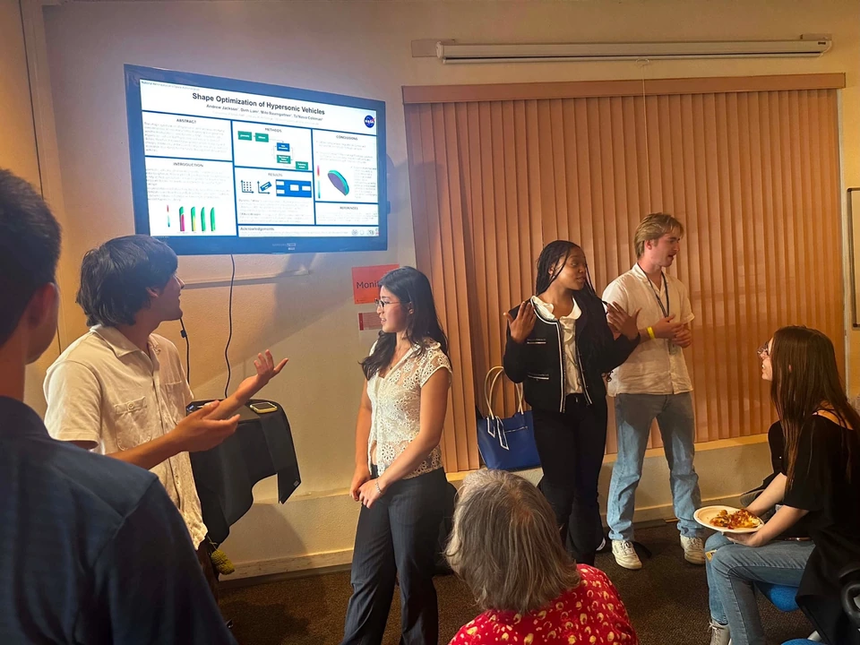

Aerospace / OptimizationSummer 2026–Present
Aerodynamic modeling & optimization
Aerodynamic table lookup and gradient-based optimization for hypersonic entry vehicles and trajectory.
My role Aerodynamic lookup tables and spline sensitivities
Result 75% less table-generation runtime
Read project: Aerodynamic modeling & optimization